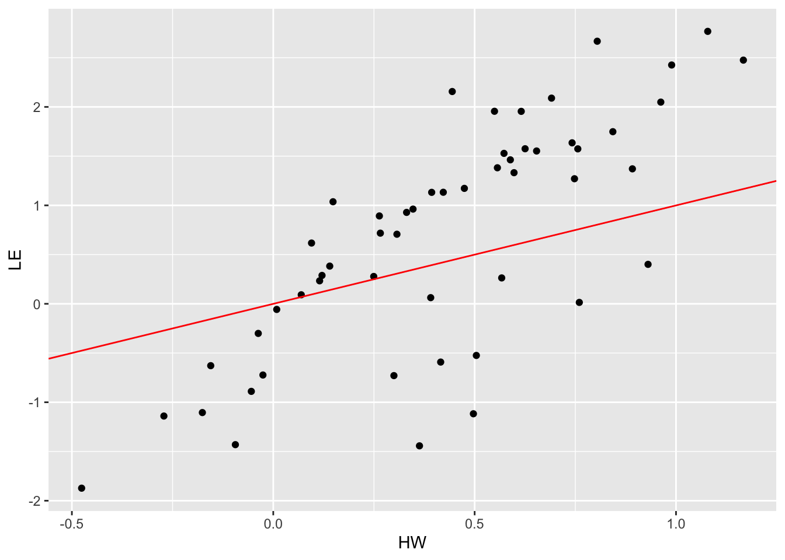
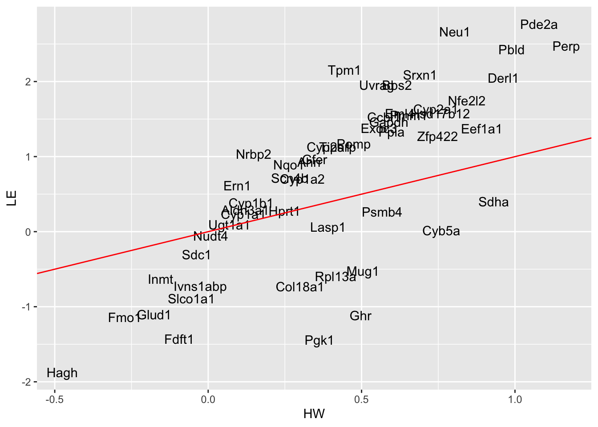
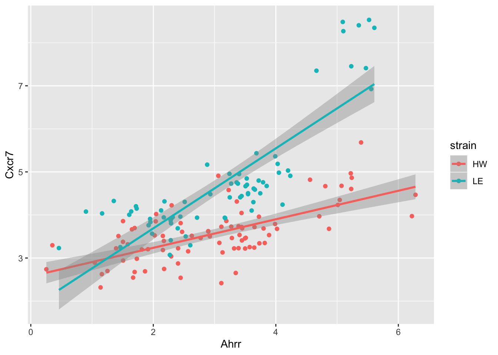
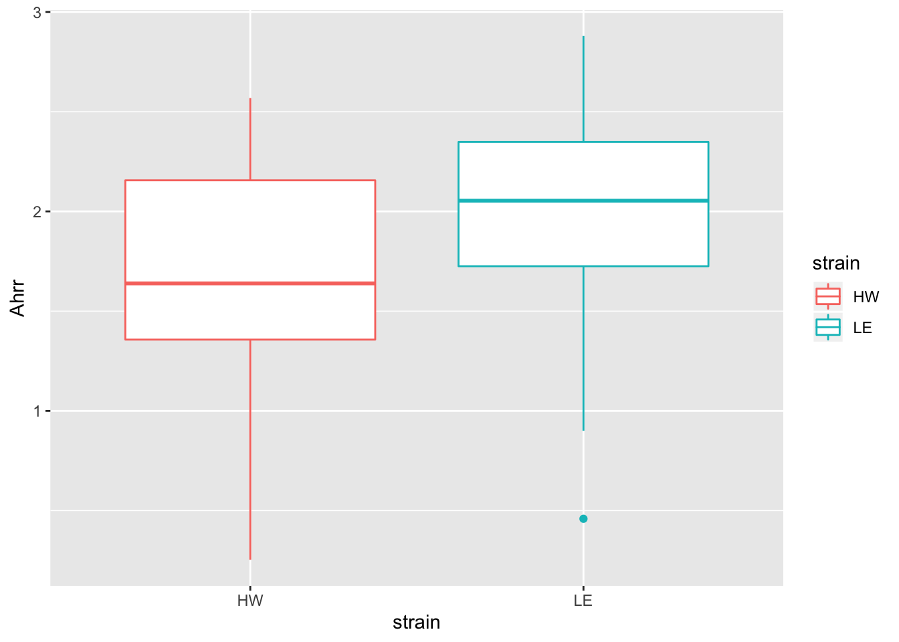

ggplot2for loops and purrr::map functionsbroomlibrary(tidyverse)
library(skimr)##
## Attaching package: 'skimr'## The following object is masked from 'package:stats':
##
## filtersession3_data = read_csv(file = "data/session3_data.csv") %>%
dplyr::select(-time, -dose)## Parsed with column specification:
## cols(
## .default = col_double(),
## strain = col_character(),
## sample = col_character()
## )## See spec(...) for full column specifications.clean_data = session3_data %>%
dplyr::mutate_if(is.numeric, .funs = log)
hw_data = clean_data %>%
dplyr::filter(strain == "HW")
le_data = clean_data %>%
dplyr::filter(strain == "LE")t.test(x = hw_data$Ahrr,
y = le_data$Ahrr)##
## Welch Two Sample t-test
##
## data: hw_data$Ahrr and le_data$Ahrr
## t = -0.75737, df = 148.97, p-value = 0.45
## alternative hypothesis: true difference in means is not equal to 0
## 95 percent confidence interval:
## -0.5485616 0.2445692
## sample estimates:
## mean of x mean of y
## 2.998168 3.150164t.test(x = hw_data$Cxcr7,
y = le_data$Cxcr7)##
## Welch Two Sample t-test
##
## data: hw_data$Cxcr7 and le_data$Cxcr7
## t = -6.7356, df = 92.864, p-value = 1.343e-09
## alternative hypothesis: true difference in means is not equal to 0
## 95 percent confidence interval:
## -1.5401323 -0.8387663
## sample estimates:
## mean of x mean of y
## 3.568083 4.757532t.test(Ahrr ~ strain, data = clean_data)##
## Welch Two Sample t-test
##
## data: Ahrr by strain
## t = -0.75737, df = 148.97, p-value = 0.45
## alternative hypothesis: true difference in means is not equal to 0
## 95 percent confidence interval:
## -0.5485616 0.2445692
## sample estimates:
## mean in group HW mean in group LE
## 2.998168 3.150164gene_long = clean_data %>%
tidyr::pivot_longer(
cols = -c("strain", "sample"),
names_to = "gene_symbols",
values_to = "gene_expression")
gene_long## # A tibble: 8,316 x 4
## strain sample gene_symbols gene_expression
## <chr> <chr> <chr> <dbl>
## 1 HW HW1 Ahrr 2.57
## 2 HW HW1 Aldh3a1 1.65
## 3 HW HW1 Bbs2 3.52
## 4 HW HW1 Ccbl1 5.47
## 5 HW HW1 Cxcr7 3.16
## 6 HW HW1 Col18a1 7.43
## 7 HW HW1 Cyb5a 10.1
## 8 HW HW1 Cyp1a1 2.90
## 9 HW HW1 Cyp1a2 10.6
## 10 HW HW1 Cyp1b1 1.87
## # … with 8,306 more rowsgene_nest = gene_long %>%
group_by(gene_symbols) %>%
tidyr::nest()
gene_nest## # A tibble: 54 x 2
## # Groups: gene_symbols [54]
## gene_symbols data
## <chr> <list<df[,3]>>
## 1 Ahrr [154 × 3]
## 2 Aldh3a1 [154 × 3]
## 3 Bbs2 [154 × 3]
## 4 Ccbl1 [154 × 3]
## 5 Cxcr7 [154 × 3]
## 6 Col18a1 [154 × 3]
## 7 Cyb5a [154 × 3]
## 8 Cyp1a1 [154 × 3]
## 9 Cyp1a2 [154 × 3]
## 10 Cyp1b1 [154 × 3]
## # … with 44 more rowsgene_nest$data[1:2]## <list_of<
## tbl_df<
## strain : character
## sample : character
## gene_expression: double
## >
## >[2]>
## [[1]]
## # A tibble: 154 x 3
## strain sample gene_expression
## <chr> <chr> <dbl>
## 1 HW HW1 2.57
## 2 HW HW2 0.352
## 3 HW HW3 0.254
## 4 HW HW4 2.30
## 5 HW HW5 2.02
## 6 HW HW6 1.70
## 7 HW WW45 2.90
## 8 HW WW46 3.11
## 9 HW WW47 3.36
## 10 HW WW48 2.04
## # … with 144 more rows
##
## [[2]]
## # A tibble: 154 x 3
## strain sample gene_expression
## <chr> <chr> <dbl>
## 1 HW HW1 1.65
## 2 HW HW2 2.14
## 3 HW HW3 2.05
## 4 HW HW4 5.73
## 5 HW HW5 4.18
## 6 HW HW6 4.40
## 7 HW WW45 7.98
## 8 HW WW46 7.01
## 9 HW WW47 7.73
## 10 HW WW48 7.96
## # … with 144 more rowst_test_ge = function(this_data){
t.test(gene_expression ~ strain, data = this_data)
}
gene_test = gene_nest %>%
dplyr::mutate(test = purrr::map(.x = data,
.f = t_test_ge),
test_tidy = purrr::map(.x = test,
.f = broom::tidy))
gene_model_long = gene_test %>%
tidyr::unnest(test_tidy)
gene_model_long %>%
ggplot(aes(x = p.value)) +
geom_histogram()## `stat_bin()` using `bins = 30`. Pick better value with `binwidth`.
gene_model_long %>%
dplyr::filter(p.value < 0.0001) %>%
tidyr::unnest(data) %>%
dplyr::mutate(
label = paste0(gene_symbols,
", p-value = ",
signif(p.value, 2))) %>%
ggplot(aes(x = strain,
y = gene_expression)) +
geom_boxplot() +
facet_wrap(~ label, scales = "free")
clean_data %>%
ggplot(aes(x = Ahrr,
y = Cxcr7,
colour = strain)) +
geom_point() +
geom_smooth(method = "lm")
lm(Cxcr7 ~ Ahrr, data = clean_data)##
## Call:
## lm(formula = Cxcr7 ~ Ahrr, data = clean_data)
##
## Coefficients:
## (Intercept) Ahrr
## 2.2446 0.6054lm(Cxcr7 ~ Ahrr, data = hw_data)##
## Call:
## lm(formula = Cxcr7 ~ Ahrr, data = hw_data)
##
## Coefficients:
## (Intercept) Ahrr
## 2.5755 0.3311lm(Cxcr7 ~ Ahrr, data = le_data)##
## Call:
## lm(formula = Cxcr7 ~ Ahrr, data = le_data)
##
## Coefficients:
## (Intercept) Ahrr
## 1.8324 0.9286lm_Cxcr7_Ahrr = function(this_data){
lm(Cxcr7 ~ Ahrr, data = this_data)
}
list_data = list(
clean_data = clean_data,
hw_data = hw_data,
le_data = le_data)
purrr::map(.x = list_data,
.f = lm_Cxcr7_Ahrr)## $clean_data
##
## Call:
## lm(formula = Cxcr7 ~ Ahrr, data = this_data)
##
## Coefficients:
## (Intercept) Ahrr
## 2.2446 0.6054
##
##
## $hw_data
##
## Call:
## lm(formula = Cxcr7 ~ Ahrr, data = this_data)
##
## Coefficients:
## (Intercept) Ahrr
## 2.5755 0.3311
##
##
## $le_data
##
## Call:
## lm(formula = Cxcr7 ~ Ahrr, data = this_data)
##
## Coefficients:
## (Intercept) Ahrr
## 1.8324 0.9286purrr::map(.x = list_data,
.f = lm_Cxcr7_Ahrr) %>%
purrr::map(.f = broom::tidy)## $clean_data
## # A tibble: 2 x 5
## term estimate std.error statistic p.value
## <chr> <dbl> <dbl> <dbl> <dbl>
## 1 (Intercept) 2.24 0.195 11.5 1.78e-22
## 2 Ahrr 0.605 0.0589 10.3 3.75e-19
##
## $hw_data
## # A tibble: 2 x 5
## term estimate std.error statistic p.value
## <chr> <dbl> <dbl> <dbl> <dbl>
## 1 (Intercept) 2.58 0.134 19.2 3.02e-32
## 2 Ahrr 0.331 0.0412 8.03 5.56e-12
##
## $le_data
## # A tibble: 2 x 5
## term estimate std.error statistic p.value
## <chr> <dbl> <dbl> <dbl> <dbl>
## 1 (Intercept) 1.83 0.260 7.05 1.22e- 9
## 2 Ahrr 0.929 0.0771 12.0 2.07e-18gene_long = clean_data %>%
tidyr::pivot_longer(
cols = -c("strain", "Cxcr7", "sample"),
names_to = "gene_symbols",
values_to = "gene_expression")
gene_long## # A tibble: 8,162 x 5
## strain sample Cxcr7 gene_symbols gene_expression
## <chr> <chr> <dbl> <chr> <dbl>
## 1 HW HW1 3.16 Ahrr 2.57
## 2 HW HW1 3.16 Aldh3a1 1.65
## 3 HW HW1 3.16 Bbs2 3.52
## 4 HW HW1 3.16 Ccbl1 5.47
## 5 HW HW1 3.16 Col18a1 7.43
## 6 HW HW1 3.16 Cyb5a 10.1
## 7 HW HW1 3.16 Cyp1a1 2.90
## 8 HW HW1 3.16 Cyp1a2 10.6
## 9 HW HW1 3.16 Cyp1b1 1.87
## 10 HW HW1 3.16 Cyp2a1 8.40
## # … with 8,152 more rowsgene_nest = gene_long %>%
group_by(strain, gene_symbols) %>%
tidyr::nest()
gene_nest$data[1:2]## <list_of<
## tbl_df<
## sample : character
## Cxcr7 : double
## gene_expression: double
## >
## >[2]>
## [[1]]
## # A tibble: 85 x 3
## sample Cxcr7 gene_expression
## <chr> <dbl> <dbl>
## 1 HW1 3.16 2.57
## 2 HW2 3.30 0.352
## 3 HW3 2.74 0.254
## 4 HW4 4.22 2.30
## 5 HW5 3.53 2.02
## 6 HW6 3.70 1.70
## 7 WW45 3.62 2.90
## 8 WW46 3.73 3.11
## 9 WW47 4.31 3.36
## 10 WW48 3.85 2.04
## # … with 75 more rows
##
## [[2]]
## # A tibble: 85 x 3
## sample Cxcr7 gene_expression
## <chr> <dbl> <dbl>
## 1 HW1 3.16 1.65
## 2 HW2 3.30 2.14
## 3 HW3 2.74 2.05
## 4 HW4 4.22 5.73
## 5 HW5 3.53 4.18
## 6 HW6 3.70 4.40
## 7 WW45 3.62 7.98
## 8 WW46 3.73 7.01
## 9 WW47 4.31 7.73
## 10 WW48 3.85 7.96
## # … with 75 more rowslm_Cxcr7_ge = function(this_data){
lm(Cxcr7 ~ gene_expression, data = this_data)
}
gene_model = gene_nest %>%
dplyr::mutate(lm_obj = purrr::map(.x = data,
.f = lm_Cxcr7_ge),
lm_tidy = purrr::map(.x = lm_obj,
.f = broom::tidy))
gene_model_long = gene_model %>%
dplyr::select(-data, -lm_obj) %>%
tidyr::unnest(lm_tidy) %>%
dplyr::select(strain, gene_symbols, term, estimate) %>%
dplyr::filter(term == "gene_expression")
gene_model_long## # A tibble: 106 x 4
## # Groups: strain, gene_symbols [106]
## strain gene_symbols term estimate
## <chr> <chr> <chr> <dbl>
## 1 HW Ahrr gene_expression 0.331
## 2 HW Aldh3a1 gene_expression 0.121
## 3 HW Bbs2 gene_expression 0.616
## 4 HW Ccbl1 gene_expression 0.573
## 5 HW Col18a1 gene_expression 0.300
## 6 HW Cyb5a gene_expression 0.760
## 7 HW Cyp1a1 gene_expression 0.115
## 8 HW Cyp1a2 gene_expression 0.307
## 9 HW Cyp1b1 gene_expression 0.140
## 10 HW Cyp2a1 gene_expression 0.742
## # … with 96 more rowsgene_model_wide = gene_model_long %>%
dplyr::ungroup() %>%
tidyr::pivot_wider(names_from = "strain",
values_from = "estimate")
gene_model_wide %>%
ggplot(aes(x = HW, y = LE)) +
geom_point() +
geom_abline(slope = 1, intercept = 0, colour = "red")
gene_model_wide %>%
ggplot(aes(x = HW, y = LE,
label = gene_symbols)) +
geom_text() +
geom_abline(slope = 1, intercept = 0, colour = "red")sessionInfo()## R version 3.6.1 (2019-07-05)
## Platform: x86_64-apple-darwin15.6.0 (64-bit)
## Running under: macOS Mojave 10.14.6
##
## Matrix products: default
## BLAS: /Library/Frameworks/R.framework/Versions/3.6/Resources/lib/libRblas.0.dylib
## LAPACK: /Library/Frameworks/R.framework/Versions/3.6/Resources/lib/libRlapack.dylib
##
## locale:
## [1] en_AU.UTF-8/en_AU.UTF-8/en_AU.UTF-8/C/en_AU.UTF-8/en_AU.UTF-8
##
## attached base packages:
## [1] stats graphics grDevices utils datasets methods base
##
## other attached packages:
## [1] skimr_1.0.7 visdat_0.5.3 readxl_1.3.1 janitor_1.2.0
## [5] forcats_0.4.0 stringr_1.4.0 dplyr_0.8.3 purrr_0.3.3
## [9] readr_1.3.1 tidyr_1.0.0 tibble_2.1.3 ggplot2_3.2.1
## [13] tidyverse_1.2.1
##
## loaded via a namespace (and not attached):
## [1] Rcpp_1.0.2 lubridate_1.7.4 lattice_0.20-38
## [4] assertthat_0.2.1 zeallot_0.1.0 digest_0.6.22
## [7] utf8_1.1.4 mime_0.7 R6_2.4.0
## [10] cellranger_1.1.0 backports_1.1.5 evaluate_0.14
## [13] httr_1.4.1 pillar_1.4.2 rlang_0.4.1
## [16] lazyeval_0.2.2 rstudioapi_0.10 DT_0.9
## [19] rmarkdown_1.16 labeling_0.3 htmlwidgets_1.5.1
## [22] munsell_0.5.0 shiny_1.4.0 broom_0.5.2
## [25] compiler_3.6.1 httpuv_1.5.2 modelr_0.1.5
## [28] xfun_0.10 pkgconfig_2.0.3 htmltools_0.4.0
## [31] tidyselect_0.2.5 fansi_0.4.0 crayon_1.3.4
## [34] withr_2.1.2 later_1.0.0 grid_3.6.1
## [37] nlme_3.1-141 jsonlite_1.6 xtable_1.8-4
## [40] gtable_0.3.0 lifecycle_0.1.0 magrittr_1.5
## [43] scales_1.0.0 cli_1.1.0 stringi_1.4.3
## [46] promises_1.1.0 snakecase_0.11.0 xml2_1.2.2
## [49] ellipsis_0.3.0 generics_0.0.2 vctrs_0.2.0
## [52] tools_3.6.1 glue_1.3.1 hms_0.5.2
## [55] crosstalk_1.0.0 fastmap_1.0.1 yaml_2.2.0
## [58] colorspace_1.4-1 rvest_0.3.4 knitr_1.25
## [61] haven_2.1.1